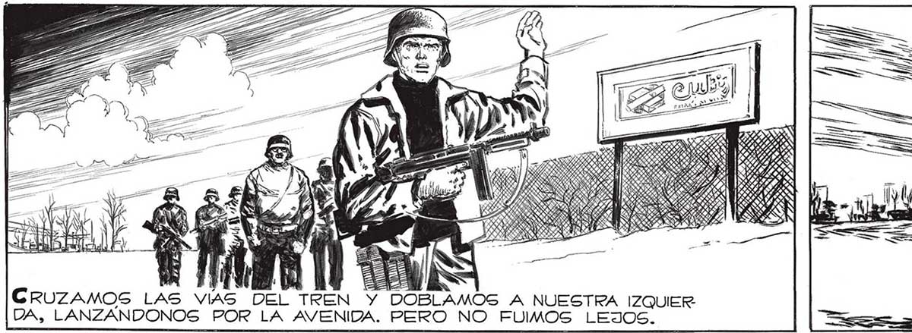
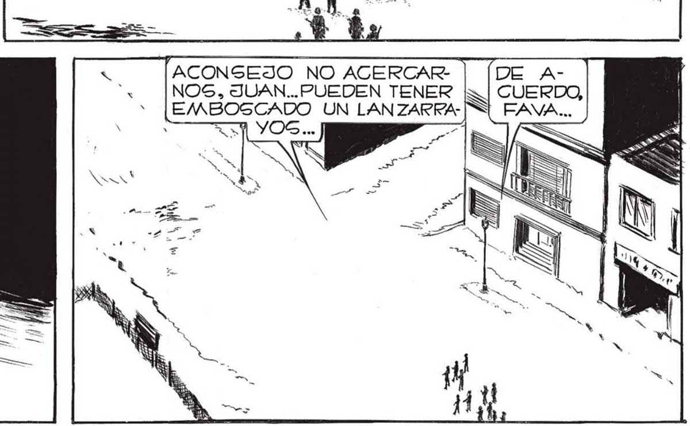
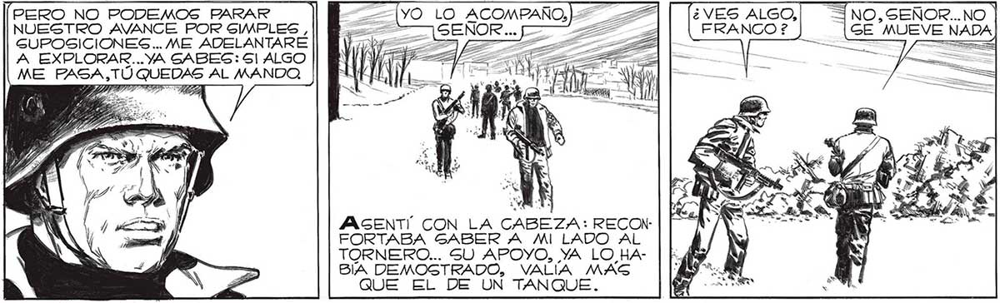

187 Nos DETUVIMOS EN EL CRUCE DE LA E ANA eel EE ces = ESE EDIFICIO DERRUMBADO | ATAJARA LOS TA o 1 18 CRUZAMOS LAS VIAS DOBLAMOS A NUESTRA IZQUIER DA, LANZANDONOS POR LA AVENIDA. PERO NO FUIMOS LEJOS. NO... HA CAIDO COMO SI 'ACONSEJO NO ACERCAR: (Gl... Y PUEDE SER ¿COMO LO VIRLES MUY BIEN TIRARÍAN LO HUBIERAN EMPUJA- NOS, JUAN... PUEDEN TENER DE TRINCHERA ABAJO ? DO DE UN LADO... SU EMBOSCADO UN LAN ZARRACOMO DEFENSA... NO HA H4- CAIDA DEBIO DE SER A YOS... Gl LO QUIEREN BIDO EX EL RUIDO COMO DE '"CAS- a APROVECHAR. PLOGION... CADA DE PIEDRAS” QUE OIMOS HACE UN RATO... IO SEDE IAS PERO NO PODEMOS FARAR 7 2 _22 ¿VES ALGO, = NO, SEÑOR... NO NUESTRO AVANCE POR SIMPLES , 22 > 22 FRANCO ? GE MUEVE NADA GUPOSICIONES.. ME ADELANTARE ¡A > : A A Es === A EXPLORAR... YA SABES: 51 ALGO ME FASA,TU QUEDAS AL MANDO, ZA POR LAS DUDAS, LO MEJOR SERX ATROPELLAR ALA CARRERA... CUÚBRAME, SEÑOR! E tr VIBE 7 hé — UN 75 UR : di O O" AS y we RO IEEE e Y a. E 6 ES A An JMASENT' CON LA CABEZA: RECON: FORTABA GABER A MI LADO AL TORNERO... SU APOYO, YA LO HABIA DEMOSTRADO, VALIA MASG QUE EL DE UN TANQUE. O ES A


